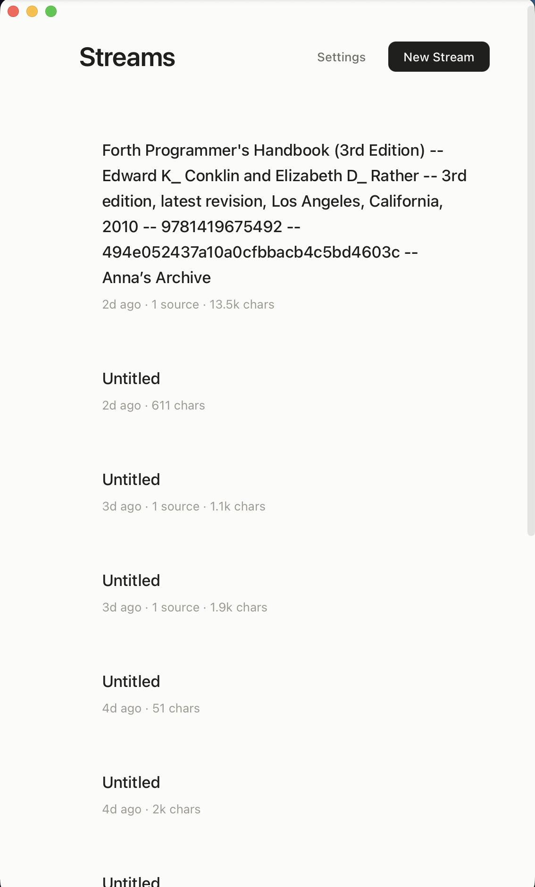
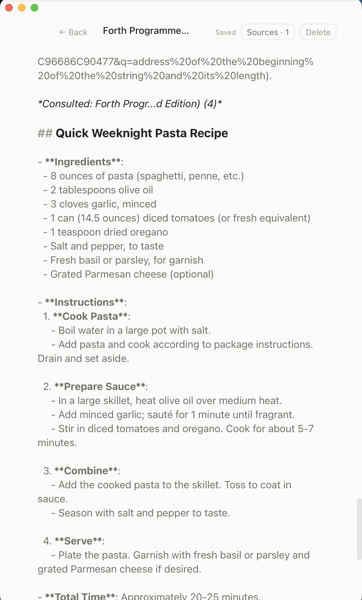
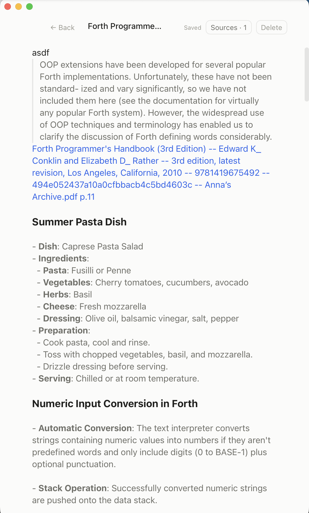

Ticker-Next · UX & Aesthetic Audit
The engineering core is solid — append primitive, revision saves, verified citations, one-undo AI. But the product currently demos its philosophy instead of embodying it. The frame for every fix in this report: Ticker is not an AI-enhanced app. It is an instrument for the user’s journey through information — IA (intelligence amplification), not AI-as-destination. The model dissolves into the medium; the document, not the assistant, is the center. Where today’s dogmatic AI-interaction patterns (chat windows, answer blocks, assistant personas) leak in, they are treated below as defects — even when they’d look “normal” in any other product.
Method: three parallel code audits (web UI · native shell · AI layer) with file:line evidence, plus a live
session driving the installed release build 2026.7.2 against real data. Screenshots below are from that session.
Mockups are rendered in Ticker’s own design tokens from Web/src/styles/index.css.
1 · What the release build showed, live trust
Three screenshots from the real app, real data, release 2026.7.2. Each one is a moment where the product contradicts its own promise within the first minute of use.


##/** marks and the URL-encoded tail of a citation link. Conceal only kicks in after the
first click. Reproduced in light and dark. This is the app’s first frame, every time.
SourceShortTitle exists and works
in AI citations — it just isn’t applied anywhere else.2 · The journey, finding by finding
Ordered by where a user hits them. Severity: trust actively erodes confidence · friction blocks or confuses · polish reads as unfinished.
Onboarding teaches one hotkey, then abandons you
Three screens teach ⌘L, mention the Device Key — and never take you to enter it. AI is dead until the user finds Settings on their own. “Skip for now” and “Continue” are the same button. Closing the window counts as onboarded.
Fix: device-key step in onboarding + a “try a capture on this very window” moment (your own planned H2.3).
OnboardingView.swift:151–161, 223
No search, no scent on the stream list
The page whose job is “re-enter your thinking” offers no search, no content preview, no pinning. ⌘K exists only after you’ve opened a stream.
Fix: mount SearchModal at App level; add a preview line + reading state to cards (mocked in §4.1).
StreamEditor.tsx:1841 · App.tsx:341–389
Replace-in-place is the only AI verb
“Send” overwrites the selection (mode: 'replace'). Replacement itself is a legitimate — even core — Ticker
move: a seed sentence develops into a fuller idea, and the boundary between your words and the model’s is meant to blur.
The defect is that it’s the unlabeled default and the only shape: no appending thought-verbs beside it, no way to tell
which move you’re making.
Fix: name it (Develop), and give it siblings that append instead of overwrite (§4.3).
StreamEditor.tsx:1333, 1393
Every AI call is one-shot — by decision, not accident
priorCells: [] is hardcoded. The audit initially proposed feeding prior exchanges back as invisible memory;
final review decision: the past is the past — prior exchanges are never fed back as context, on any surface.
Exchanges are recorded for receipts (§7.4) only. The one exception: the quick panel’s own live ephemeral turns, which are a
conversation the user is currently having, not resurrected history.
AIMessageHandler.swift:177 · locked as D1 in docs/IA_CORE_PLAN.md
No stop button, no model name, hidden scope
Once Send fires you wait. The proxy reports which model ran; the web layer discards it in an empty handler. The Auto/All/None source scope lives only inside the prompt popover but silently governs plain Send too.
Fix: Stop control on the pill; model chip on answers; scope visible wherever Send is possible.
StreamEditor.tsx:651–655, 1240–1243, 1652
The reader is the least-invested surface
For a “document reading” north star: opens at page 1 every time, no outline/TOC (PDFKit gives it free),
no thumbnails, no zoom UI, one PDF at a time, and failures are a literal NSSound.beep().
Fix: resume position + outline sidebar + words instead of beeps. (R4 plans part of this — pull it forward.)
PDFReaderPaneController.swift (outlineRoot unused)
Capture hotkeys collide and can’t be changed
⌘L hijacks the address bar in every browser; ⌃Space collides with macOS input-source switching; neither is rebindable. Permission warnings only evaluate the first time the panel shows.
Fix: rebindable hotkeys in Settings; re-evaluate permission state per toggle.
HotkeyService.swift:11 · QuickPanelManager.swift:330
The app forgets itself between launches
No window-frame restoration (recomputes right-⅜ position every launch), no memory of the open stream or PDF. Menus lack ⌘, Settings, Window/Help menus, dock menu. No URL scheme, Services, Share extension, or Shortcuts — every standard macOS “get things in” channel is closed. Dev tools (Inspect Element) ship enabled in release.
Fix: frame autosave + reopen last stream; URL scheme + Share extension first (they feed capture ubiquity).
AppDelegate.swift:338–377 · WebViewManager.swift:28 · Info.plist
What’s already excellent — protect it
The capture ladder with honest statuses. Verified quote-flash citations (system-checked, never fabricated). One-⌘Z AI apply. Revision-checked saves. The PDF window choreography. Warm paper palette, working dark theme. These are the trust assets the fixes above should match.
3 · The philosophical inversion strategic
Put the two AI surfaces side by side and the core problem is visible: the app’s depth and its dialogue live on opposite surfaces. The persistent, source-grounded surface can’t converse; the conversational surface is sourceless and evaporates on Esc.
| Document AI — the “deep work” surface | Quick panel ⌥↵ — the “throwaway” surface | |
|---|---|---|
| Multi-turn conversation | No — every call cold (priorCells: []) | Yes — real threaded chat |
| Your sources / RAG | Yes — retrieval, citations, provenance | No (streamId: nil) |
| Persistent | Yes — it’s the document | Ephemeral by design — and selective save is a strength, not a flaw |
| Persona (Prompts.swift) | “Terse. No filler. Lead with substance — facts, data.” | “Respond naturally… ask a clarifying question if needed.” |
The document persona is an answer-dumper by instruction: nothing in any document prompt ever asks a question back, surfaces a tension, or pushes against a weak claim. The result is visible in every stream: the same bold-term bullet wall. That is “AI replaces your thinking, in your own notebook.” Three moves fix it, all on existing plumbing — mocked in the next section.
4 · Interface fixes, mocked in Ticker’s own tokens
Each pair shows current behavior (recreated faithfully) against the proposed change. Nothing here needs a new data model — every “after” is markdown conventions + existing services + CM extensions.
4.1 · Stream list: from amnesia to re-entry trust
No search on this page. Titles are raw filenames or nothing. “Chars” as the unit of thought. Nothing tells you where you left off or what’s unresolved.
Auto-title, living until claimed via the existing generateRestatement service: the title
keeps regenerating as the stream evolves — until the user explicitly renames it, at which point it freezes and never
auto-updates again. Preview line from the doc’s first paragraph. Reading position gives a reason to come
back. Words, not chars. Dependency, made explicit (your catch): the “open questions” badge is powered by open margin
notes (§7.5) and exists only once marginalia ships (§8 row 11) — until then cards show title + preview + reading position,
nothing the decided feature set can’t actually provide.
4.2 · Document AI: a fusion document with memory — not a chat window strategic
What’s wrong today is the output shape (bullet-wall). The obvious industry fix — threads, avatars, attribution blocks — is wrong for Ticker: the product’s point is that your ideas and the model’s blur into one research document. And per the final decision, so is memory: every call stays one-shot; the past is the past. So: fix the prose by prompt, and make provenance something you summon, not something that decorates every block.
## Quick Weeknight Pasta Recipe
- **Ingredients**:
- 8 ounces of pasta (spaghetti, penne, etc.)
- 2 tablespoons olive oil
- **Instructions**:
1. **Cook Pasta**: boil water in a large pot…
The bullet-wall is what the prompt asks for (“terse… lead with facts”). It reads as a bot transcript —
the exact aesthetic Ticker exists to escape — and the next Send starts cold (priorCells: []).
Threads, model chips, attribution headers on every block, “↩ Follow up” buttons…
Looks tidy, and every AI product does it — which is the argument against it. Permanent attribution chrome re-erects the human/AI boundary the product is trying to dissolve, and turns the document into a transcript.
>NUMBER only converts unsigned digit strings, so a sign has to be handled before conversion: peek for “-”, convert the rest, negate — the pattern NUMBER? itself uses [Forth Handbook p.112]. That explains the crash: the interpreter never saw my minus sign as part of the number.
>NUMBER only converts unsigned digit strings, so a sign has to be handled before conversion: peek for “-”, convert the rest, negate — the pattern NUMBER? itself uses [Forth Handbook p.112]. That explains the crash: the interpreter never saw my minus sign as part of the number.
One-shot by decision (D1): no prior-exchange memory anywhere — the past is the past. Prose by prompt kills the bullet wall. X-ray as a toggle answers “what came from where” only when asked; toggle off and the seams vanish again. Dissolve strips a passage’s AI metadata into plain text — absorption as a deliberate act. This is the chosen direction — the full design (data model, edit semantics, affordances) is fleshed out in §7.
4.3 · Selection menu: thought-moves, not content-moves strategic
Raising rent mid-term is probably fine because the lease is silent on it.
“Send” replaces the selected sentence with model output — your claim vanishes under the answer. Two undifferentiated AI verbs; formatting and thinking share one flat bar.
Raising rent mid-term is probably fine because the lease is silent on it.
Weakest point: silence doesn’t create permission. §4.2 fixes rent “for the Term” [Lease p.3] — a mid-term raise would need a modification clause, and §11 requires written consent for any amendment. What’s your basis for “probably fine”?
Ask appends an answer grounded in the document and its sources (one-shot, per D1). Challenge finds the weakest point in your claim and ends with a question back — augmentation made tangible. Rewrite ▾ holds the replacing verbs — including Develop (today’s Send: seed sentence → fuller idea in place), which stays a first-class Ticker move, now named. Registry pattern = your own Feature Surface §1; each verb is a prompt + a replace/append flag. (Direction approved — Challenge ships in the first pass.)
4.4 · Names: short titles everywhere trust
A five-line link. The same string is the stream title, the PDF pane header, the quick-panel picker and every search result.
Consulted: Forth Handbook (4)
SourceShortTitle already derives “Forth Handbook”-class names for AI citations — apply it to
highlight links, pane headers, pickers, search results, and stream seeds. Keep the full filename as hover/tooltip metadata.
And fix link interaction itself: today, putting the cursor on a link explodes it into the full raw markdown —
URL-encoded query and all (see §1, screenshot 2). Click should navigate, period; editing gets a small popover
(label · target · unlink), and the raw form appears only for a naked-markdown power-edit (e.g. ⌥-click). The document
never has to look like plumbing.
4.5 · Quick panel: quick-and-dirty is the point — sharpen it, don’t grow it
(Revised per review: the panel must not become a ChatGPT replica, and threads must not auto-persist — random questions would pollute streams. Selective persistence is the power move. Longer inquiry belongs in the stream, §4.2.)
Right instincts already: ephemeral, per-message save. Two real gaps: it can’t see the picked stream’s
sources (streamId: nil), and a conversation that turns out to matter has no exit besides copying messages
one by one.
Ephemeral stays the default — Esc still discards everything; “keep” persists exactly the messages you choose (exists today, kept). Addition 1 (now): the panel sees the picked stream’s sources — it already holds the streamId; answers get the same citations as the editor. Addition 2 (deferred — end-stage): “⤴ continue in stream” would need a real conversation mode inside the editor, which is meaningful extra work; per review it’s worth doing but tackled last, after the provenance layer (§7) exists to carry it.
5 · Aesthetic system polish
What’s right: the warm paper palette, the calm low-chrome register, a real token file, a working dark theme. What reads as prototype, with the specific fix for each.
5.1 · The accent — decided: sienna chosen
#2563ebTailwind blue-600 — the default of defaults; it colored the product’s identity: every AI action, citation, link.
#34506bDesaturated ink-blue; passed over.
#a4502eWarm editorial rust; strong signature, pairs with the paper bg, distinct from every AI-tool blue.
This page has been repainted with it — every link, citation, x-ray tint, and
selection highlight above now renders in sienna, so you’re looking at the decision, not imagining it. In the app it’s one token
swap: --accent (+ soft/hover/focus derivatives and a lighter dark-mode variant, e.g. #d98a63-class).
5.2 · Heading hierarchy is nearly flat
Confirmed live: headings read as slightly-bold body text; document structure disappears at a glance. (The graded 620–650 weights also collapse to ~600 — SF Pro isn’t variable in that range.)
5.3 · The rest of the prototype tells, each with its one-line fix
(Governing rule, per review: any styling that marks text as AI-made must be whisper-subtle and user-removable — the whole point is dissolving the human/AI boundary, so AI “accent” is a debug layer you summon (§4.2 x-ray), never permanent decoration.)
| Tell | Where | Fix |
|---|---|---|
| Two competing “primary” button colors — near-black vs accent blue, no rule | primary-button / settings-save-key vs ai-send / search-go | One rule: black = act, accent = AI. Enforce everywhere. |
Emoji iconography (📝 🔑 ⏳ 📄) mixed with hand-drawn SVGs; toast close is a literal lowercase “x”; alert() dialogs | App.tsx:364 · ToastStack.tsx:67 · Settings.tsx:242 | One SVG icon set (SF-Symbols-adjacent); kill every emoji and alert(). |
| One 8px radius for everything — boxy on 20px chips, fine on modals | --radius-xs…xl all alias 8px | Add a real 4px small-control radius token. |
| Inline code is just a font swap; fenced blocks unstyled entirely | index.css:209–212 | Background chip + padding inline; surface + hairline for fences. |
Modal scrim so subtle the page behind stays readable (live); search modal is a mostly-empty sheet with raw ** in snippets | SourcesModal / SearchModal | One real scrim token; strip markdown in snippets; size modals to content. |
| Ad-hoc transition durations (0.1–0.3s); appended fragments just pop into existence | scattered | --duration-fast/base tokens + one signature “arrival” animation for appends — make the append primitive felt. |
| AI output itself is an aesthetic problem — the bullet-wall is what the prompt requests | Prompts.swift:9 | “Write flowing prose; lists only when structure demands; never bold term-lists.” Cheapest visual upgrade in the app. |
6 · Radical directions — IA, not AI strategic
Per review: the center of this product is the user’s journey as they encounter information — not the model. These are the directions that would move Ticker from interesting to a genuinely different category: intelligence amplification, deliberately breaking today’s dogmatic AI-interaction patterns. Each is buildable on primitives that already exist.
The document is the prompt — no prompt boxes
Kill the notion of “prompting” entirely: cursor position + surrounding text + sources are the query. One gesture (⌘↵ with nothing selected) means “think onward from here” — the model continues the document’s reasoning, in the document’s voice, grounded in its sources. Writing and querying become the same act; the chat box never appears.
Built from: the existing paragraph-fallback in getSelectionContext + stream memory
(§4.2). It’s a prompt template, not an architecture.
Provenance x-ray + dissolve chosen — first prototype
Boundaries dissolve by default; honesty survives as a summonable layer. Toggle x-ray on: the document reveals what’s yours, what was developed with the model, what’s grounded where (§4.2 mock). Toggle off: seams vanish. Any passage can be dissolved — metadata stripped, text absorbed as plainly yours. Resolves “nothing silent” and “no boundaries” in one move. Full design sketch: §7.
Built from: a sidecar span layer (§7.1) + one CM decoration extension keyed to the toggle.
Invited marginalia — the document reads you back chosen — second, as a toggle
Instead of the AI writing in your document, invite it to the margins: “read this back to me” annotates your draft from the side — the gap in an argument, a tension with something you wrote three weeks ago, a passage in your sources that disagrees. Margin notes are ephemeral until you promote one into the text. Your prose stays untouched; the model becomes a reader, not a co-author — the Socratic register the philosophy calls for.
Built from: a CM gutter/widget extension + the append API + retrieval across the stream’s sources (all shipped). Anchors ride the same span substrate as §7 — and yes, this is the “customize the editor more heavily” workstream: one deliberate editor investment (spans + margins + decorations) that x-ray, marginalia, and provenance all share.
Trails — the memex loop
Every capture, reading position, link, and exchange is already a timestamped event. Surface them as a trail: how an idea developed — what you read, what you asked, what you kept — replayable per stream. Resurfacing (“you were circling this three weeks ago”) draws from trails, giving the app a memory of your journey, not just your text. This is the retention loop that respects the philosophy: it pulls you back to your own thinking.
Built from: append events, pdf positions, revision history — the data exists; this is a view.
Reading as dialogue, not extraction
While the PDF pane is open, the stream alongside it becomes the conversation with the book: select a passage → “what would the author say about my §2 claim?” — answers grounded in both the book and your draft, anchored both ways. The citation plumbing already round-trips; this makes reading an argument you’re part of rather than a thing you summarize.
Built from: PDF selection capture (shipped), retrieval, bidirectional anchors (Feature Surface §4).
7 · The provenance layer — design sketch strategic
Per review, this is the future of the product, so it gets a real design. First, the mode question you raised, resolved: inline AI text is always injected as-is and carries provenance (your lean — one rule, no per-feature choice); explicitly quoted AI voice exists only where the AI is structurally a commenter, not a co-author — margin notes (§6) and Challenge replies. Two registers, one boundary: in the text = fused with provenance; beside the text = quoted.
7.1 · Data design: sidecar spans, never markup
Why sidecar and not inline markers: the markdown stays pure — invariant #1
(“one data model, text is text”) survives untouched, export stays clean, no parser forks, and copy-paste into another app
leaks nothing. Why not a block/cell model: that’s the cell era again; spans are character ranges over the one
document.
The editor is the authority for positions. A CM StateField holds the spans and maps them through every
transaction (ChangeSet.mapPos — CodeMirror has already solved the hard problem). Autosave persists spans in the
same 350ms debounced, revision-guarded save as the text — spans and markdown can never drift a revision apart.
External writers keep the invariant: appendToStreamDocument computes the fragment’s spans at append time,
in the same transaction — the single-write-primitive rule is exactly what makes this tractable.
7.2 · Edit semantics: provenance decays as you rework — never spreads
The one rule
Provenance is never inferred, only inherited. Text you type is always yours — typing inside an AI span splits it in two around your insertion; nothing you write is ever marked. Deletions shrink and merge spans mechanically via position mapping. No heuristics, no “probably AI” — a span exists only because a specific request created it.
Emergent decay, manual dissolve
Heavy reworking naturally fragments spans into slivers — in x-ray, a passage you’ve truly absorbed looks mostly yours, automatically. Deliberate dissolve (per-span or per-selection) deletes the rows; it rides the CM history as an effect, so ⌘Z restores it. No auto-dissolve threshold in v1 — decay-by-editing is emergent and honest.
Boundaries of the system
Paste out of Ticker: plain text, nothing leaks (spans are sidecar). Paste within the doc: provenance is dropped — moved text becomes yours. Simple and predictable; revisit only if it bites. Revision conflict (external append vs stale editor): the reload that already handles the text reloads the spans with it — one source of truth, same code path.
7.3 · The full affordance set
peek for “-”, convert the rest, negate — the pattern NUMBER? itself uses [Forth Handbook p.112]
Writing mode (default): zero decoration. No pills, no tints, no layout shift —
the padding question answers itself because provenance detail never renders inline; it lives in the hover card (above) and
the margin, so line spacing never changes.
X-ray toggle (👁 in the header — chosen): tint + dotted underline per origin; hover card per span with
dissolve · show exchange (the request/response that produced it) · re-develop (run the verb again in place) · open source.
Selection while in x-ray gets “dissolve selection”.
Marginalia toggle (second prototype): same substrate — margin notes anchor to spans.
Export: provenance stripped by default; optional “with receipts” export renders spans as footnotes.
Trails (§6): span-creation events are the trail’s raw material — the layer pays forward.
7.4 · “Show exchange” and “re-develop”, precisely
Both need one new table, written by AIMessageHandler at completion time (it holds every field at
that moment): ai_exchanges(request_id PK, stream_id, verb, user_input, source_manifest JSON, response_raw, model,
created_at). Retention: an exchange row is deleted when the last span referencing its request_id dissolves —
they’re text-only and tiny, so no other GC.
Show exchange — a read-only receipt, step by step
1 · X-ray on → hover a span → card → “show exchange”.
2 · An overlay opens (same surface tokens as SearchModal) with three labeled blocks: You (the selection + typed
prompt that produced it), Consulted (the source manifest — page links clickable straight into the PDF pane),
Model returned (the raw pre-swap response, markers and all).
3 · Footer: re-develop · copy raw · esc. Strictly read-only — editing an exchange would blur the quoted
register.
Edge cases: exchange row missing (pre-feature span, or GC’d) → the card shows “exchange no
longer stored” instead of the action — honest absence. A span split into five slivers shares one request_id —
any sliver opens the same overlay. Overlay during an in-flight AI call: fine, it’s a read.
Re-develop — re-run the verb, never blind, step by step
1 · Available only on ai-origin spans (you don’t “re-develop” a captured quote — you Develop a selection over it,
which creates an ai span), only when no request is in flight, and only when the span is ≥ 3 words (a 2-word sliver isn’t a
unit of thought — the action hides).
2 · Click → the span’s current text becomes the selection and the original prompt (if the verb had one) appears
pre-filled in the prompt popover — nothing fires without you seeing what will run.
3 · Confirm → the standard Develop pipeline: replace mode, streaming, one-⌘Z undo.
4 · Result: a new span, new request_id, with meta.parent_request_id pointing at the old one — a
lineage chain (trails, §6, gets its raw material free).
Edge cases: ⌘Z restores both the prior text and the prior span (span ops ride history, §7.6). A span crossing a structural boundary (heading → list) can come back as prose — same accepted risk as Develop today.
stateDiagram-v2
direction LR
[*] --> Live: verb/append writes text + span in ONE transaction
Live --> Live: user types inside → span splits around insertion
Live --> Live: deletions shrink / merge via position mapping
Live --> Replaced: re-develop (new span, parent_request_id lineage)
Live --> Dissolved: manual dissolve (undoable, rides ⌘Z)
Live --> Dropped: text_hash mismatch on load → dropped silently
Replaced --> [*]
Dissolved --> [*]
Dropped --> [*]
7.5 · Marginalia, precisely
Born of invitation only (v1). No automatic ambient commentary — uninvited notes are exactly the AI-centric noise the product rejects, and they burn tokens on documents nobody asked about. Two entry points: a “Read back” action when the marginalia toggle is on (scope picker: viewport · section · document, viewport default), and — once this ships — Challenge migrates here: its reply is structurally a comment, so it becomes a margin note anchored to your selection (until then it appends as a quoted block; that dependency is explicit, §8 rows 4 vs 11).
What a note is
Three kinds, labeled by kind, never by persona: question (a gap in the argument), tension (contradicts your
own text or a source), connection (another stream or a source passage, deep-linked). One “Read back” pass returns a
JSON manifest; each item must include a verbatim quote of the text it anchors to — verified against the document with
the same NormalizedTextMap machinery citations use. Unverifiable anchor → item silently dropped
(wrong-worse-than-none). Cap: 5 per pass, deduped against prior notes by (anchor, kind, body-hash).
What you can do with one
Not edit it. Margin notes are the quoted register — editing would fuse voices in the one place they must stay distinct. Three actions: promote (its text inserts at the anchor as ordinary prose carrying an ai span — it crosses into the fused register deliberately), dismiss (deleted and suppressed by body-hash — the same never-re-offer pattern as clipboard dismissal), or leave it open. Open questions are countable — this is what the §4.1 “open questions” badge actually counts; until marginalia ships that badge doesn’t exist and stream cards show reading position only (your catch — the mock previously promised a mechanism nothing provided).
Where it lives
Sidecar table margin_notes(id, stream_id, anchor_start, anchor_end, anchor_hash, kind, body, request_id,
status, created_at) — never in the markdown. Anchors map through edits via the same ProvenanceField;
if the anchored passage is edited beyond hash match the note flips to unanchored — shown grayed at the margin top
as “passage changed”, dismissible, never guessed back into place. Narrow window (margin needs ~1100pt+): notes collapse to
gutter dots; click opens the note as a popover. Notes persist across relaunch — that persistence is what makes the badge real.
stateDiagram-v2
direction LR
[*] --> Proposed: Read back (scope viewport/section/doc) or Challenge
Proposed --> Open: anchor quote verified in doc (max 5, deduped)
Proposed --> Discarded: anchor unverifiable → dropped silently
Open --> Promoted: ↑ promote → prose at anchor + ai span (fused register)
Open --> Dismissed: × dismiss → suppressed by body-hash, never re-offered
Open --> Unanchored: anchored passage edited past hash match
Unanchored --> Dismissed
Promoted --> [*]
Dismissed --> [*]
Discarded --> [*]
7.6 · Robustness — wrong provenance is worse than none, and the list of things that will bite
Your citation principle, applied to the layer: every span and every note anchor stores a hash of its covered text; mismatches drop silently on load rather than render wrong. Property tests on the mapping: random edit sequences must preserve span↔text correspondence; append round-trips and conflict-reload rebases get their own suite. And the pre-mortem — the specific ways this bites later, named now:
| Bite | Why it hurts | Defense |
|---|---|---|
| Offset units differ between Swift and CodeMirror | CM offsets are UTF-16 code units; naïve Swift
String counting is grapheme-based — one emoji in a capture and every span after it is shifted. The silent killer. |
Spans computed on the Swift side (appendToStreamDocument) MUST count UTF-16; a round-trip test with
emoji/CJK content in CI. |
| Undo vs sidecar state | ⌘Z after dissolve must restore the span too, or undo manufactures provenance-less AI text. | Span/note ops are CM StateEffects registered with the history extension —
they invert with the edit they rode in on. |
| Save/conflict divergence | Spans persisted out of step with markdown = anchors one revision stale. | Spans serialize inside the same 350ms debounced, revision-guarded save; a conflict reload replaces text and spans together from the DB — one code path. |
| Decoration stacking | X-ray tints must compose with conceal replacements and atomic image widgets — wrong precedence = flicker or broken conceal. | Explicit CM extension precedence; tints skip widget ranges (the hash covers raw text, so integrity is unaffected). |
| Span-count creep | A heavily-reworked old doc accumulates hundreds of 2-char slivers — noise in x-ray, weight in every save. | Normalization on save: adjacent same-request slivers merge; slivers < 3 chars dissolve automatically (the one auto-dissolve, mechanical not semantic). |
| Pre-v18 documents | Existing text has no provenance and someone will be tempted to infer it. | Never. Unmarked = yours, by definition, forever. No backfill, no classifier. |
| Read-back cost on big docs | Document-scope marginalia over a 400KB stream = a large prompt, silently. | Scope picker defaults to viewport; document scope routes through the existing retrieval budget instead of raw concat. |
| Register leaks | Future features (in-stream conversation mode, share/export) will be tempted to render AI voice inline with chrome. | The two-register rule is written down here: in the text = fused + span; beside the text = quoted. New features pick one, never invent a third. |
One extension (ProvenanceField), two sidecar tables, one append-API touch —
this is the “heavier editor customization” investment, made once, that x-ray, dissolve, marginalia, trails, and the eventual
in-stream conversation mode all stand on.
8 · Priorities, leverage-ordered
Effort: S ≤ 1 Codex round · M a few rounds · L a phase. The top five are each small enough to be one governed task.
| Change | Why it leads | Effort | |
|---|---|---|---|
| 1 | Auto-title streams + short source titles everywhere (§4.1, §4.4) | Both services exist (generateRestatement, SourceShortTitle). Erases the ugliest thing on every surface at once. | S |
| 2 | The document never looks like plumbing — open at top / last position with conceal pre-painted, and link clicks navigate (edit via popover, not raw-MD explode) (§4.4) | The current first frame and every link click contradict the core rendering promise. | S |
| 3 | Stream memory — REMOVED by final decision (D1: the past is the past; every call stays one-shot) | Withdrawn. Exchanges are receipts only, never context. | — |
| 4 | Prompt rewrite: socratic verbs + prose style (§4.3 — approved direction) | Prompts, not architecture. Kills the bullet wall; Ask/Challenge/Define append, Develop replaces, named. | S |
| 5 | ⌘K + previews on the stream list (§4.1) | The default page currently offers nothing to grab onto. | S |
| 6 | Provenance layer foundation + x-ray toggle (§7 — the chosen first radical prototype) | The platform investment everything strategic rides on: spans migration, ProvenanceField, x-ray, dissolve. | L |
| 7 | Quick panel sharpening: sources when a stream is picked; ephemeral stays the default (§4.5 — “continue in stream” deferred to end-stage) | Keeps the panel quick-and-dirty while making its answers as grounded as the editor’s. | S |
| 8 | Reading dignity: resume position, outline sidebar, words instead of beeps | The north-star surface is currently the least-invested. outlineRoot is free. | M |
| 9 | Aesthetic unification sprint (§5): sienna rollout (decided), type scale, button rule, icons, scrim/radius/duration tokens, code styling | One or two days; disproportionate perceived-quality jump. | M |
| 10 | Honesty controls: Stop button, model visibility (x-ray carries it), scope visible on plain Send | Cheap, and consistent with the nothing-silent principle you already enforce elsewhere. | S |
| 11 | Invited marginalia toggle (§6 — chosen second prototype, rides the §7 substrate) | The Socratic register made real, once spans + margin machinery exist. | M |
| 12 | macOS integration: URL scheme + Share extension, frame/state restoration, dev tools off in release | Capture ubiquity (your Feature Surface §6) needs the channels open; the rest is table stakes. | L |
docs/IA_CORE_PLAN.md (Roadmap 4 — IA Core): phased tasks, exact schemas, prompts, contracts, and
the D1–D11 locked-decision table, written for a smaller model to implement under the usual governed protocol.#d98a63-class as starting point). Everything else raised in review is resolved above.